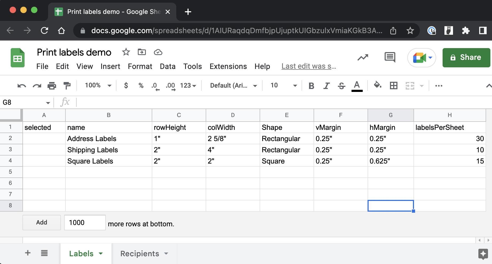
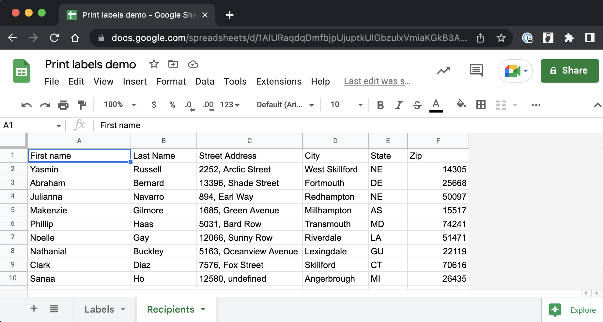
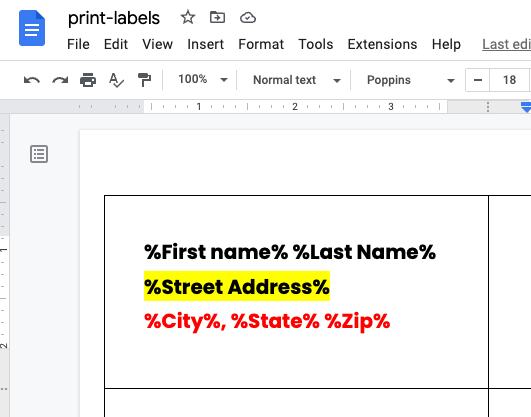

Are people still printing labels these days? I guess they are. Well, we can help those poor souls with some good-old Apps Script magic. Let's build a system that lets the user select a label type. The script will create a template that corresponds with the user's selection. The user will then paste a set of placeholders inside the template, and our Apps Script will take some fake recipients' data and mail-merge it into the labels. Sounds good? Lovely!
Setup
My setup includes a Google Sheet with its own Google Apps Script, and a standalone Google Doc. For brevity, I'll be using the doc for both the template creation and the mail-merge part, but you can do the mail-merge in a separate Google Doc, if that tickles your fancy.
My Google Sheet includes two tabs: one includes a selection of labels and their metadata:
The other tab includes my audience data, all fake info:
Here are the tasks that we need to accomplish:
- Get the selected label's information
- Convert inches to points
- Make a template
- Set body margins
- Create table
- Set up mail Merge
- Get template table and copy
- Populate page with mail merge
Get the selected label's information
The idea here is that the user will indicate the desired label with a mark in column A. We need to get the metadata of the selected label.
Open Google Apps Script form the "Extensions" menu of your Google Sheet, and enter the following code:
const g = {
docId: 'paste_here_the_ID_of_your_Google_Doc',
};
function init_() {
g.doc = DocumentApp.openById(g.docId);
g.body = g.doc.getBody();
g.ss = SpreadsheetApp.getActive();
}This first lines define a constant "g" that is an object with a single property docId. The value of this property is a string that represents the ID of your Google Doc.
This init_ function sets several properties of the "g" object. It calls the openById method of the DocumentApp service, passing in the ID of the document. This method returns a Document object, which is stored in the doc property of g. The getBody method of the Document object returns the body of the document as a Body object, which is stored in the body property of g. Finally, the getActive method of the SpreadsheetApp service returns the active Google Spreadsheet, which is stored in the ss property of "g".
I define "g" and init_ in the global scope because our script will refer to them time and again.
Let's create our template function and set it up to get the label information:
function makeTemplate() {
init_();
let { rowHeight, colWidth, vMargin, hMargin } = getSelectedLabel_();
}makeTemplate generates the label template. It calls init_ to set the properties of the "g" object. It then calls getSelectedLabel_, which returns an object with the user-selected label's row height, column width, vertical margin, and horizontal margin. Here is getSelectedLabel_:
function getSelectedLabel_() {
const sh = g.ss.getSheetByName('Labels');
const [headers, ...data] = sh.getDataRange().getValues();
const labelRow = data.find((row) => row[0]);
const labelObj = {};
labelRow.forEach((value, i) => {
const header = headers[i];
labelObj[header] = value;
});
return labelObj;
}Above, we ge the header row and data rows of our Labels sheet. We then find the row that is marked in column A. We create a simple object, and iterate over the selected row, picking the header by index and assigning it with the row value to the object. Finally, we return the object.
Convert inches to points
The data in our sheet about the labels is set in inches. We need to convert the numbers to points (using 72 points per pixel). We have to deal with integer numbers and as well as measurements that include an integer and a fraction. So inside makeTemplate, let's convert the measurements:
rowHeight = inchToPoint_(rowHeight);
colWidth = inchToPoint_(colWidth);
vMargin = inchToPoint_(vMargin);
hMargin = inchToPoint_(hMargin);function inchToPoint_(m) {
m = m.replace(/"/g, '');
m = m.split(' ');
if (m.length == 1) {
return parseFloat(m[0]) * 72;
}
const [n, d] = m[1].split('/');
return (parseInt(m[0]) + parseInt(n) / parseInt(d)) * 72;
}inchToPoint_ takes the string from the sheet, and replaces any " character with an empty string. It then splits the string into an array on the space character. If the length of the array is one then we convert it to a float, multiply by 72, and return it. If it has both an integer and a fraction then we split the second array member on the forward slash, convert all values to integers, add the integer to the fraction, multiply by 72 and return it.
Set body margins
Each label type might have different page margins, so we need to adjust our page accordingly. We also need to clear the page from any prior script executions. So inside makeTemplate, add:
g.body.clear();
g.body.setMarginTop(vMargin);
g.body.setMarginBottom(vMargin);
g.body.setMarginLeft(hMargin);
g.body.setMarginRight(hMargin);Create table
It's time to add our template table. We need to calculate the number of rows and columns that we should include based on the available space on the page:
const pageWidth = g.body.getPageWidth();
const pageHeight = g.body.getPageHeight();
const availWidth = pageWidth - hMargin * 2;
const availHeight = pageHeight - vMargin * 2;
const numColumns = Math.floor(availWidth / colWidth);
const numRows = Math.floor(availHeight / rowHeight);
const cells = new Array(numRows).fill(new Array(numColumns).fill(''));
const table = g.body.appendTable(cells);The getPageWidth and getPageHeight methods of the Body object are called to get the width and height of the page, which are used to calculate the available width and height for the label cells. The number of columns and rows that can fit on a single page is calculated using the available space and the user-selected row and column sizes. The program then generates a nested array of empty strings using the number of rows and columns to represent the label cells. It creates a table with these cells using the appendTable method.
Now that the table appears on the page, we need to adjust the rows' hight and columns' width based on the dimensions of our label:
for (let i = 0; i < numRows; i++) {
const row = table.getRow(i);
row.setMinimumHeight(rowHeight);
}
for (let i = 0; i < numColumns; i++) {
table.setColumnWidth(i, colWidth);
}
// This part is optional and you may need to adjust it
// based on your actual label
for (let r = 0; r < numRows; r++) {
for (let c = 0; c < numColumns; c++) {
const cell = table.getCell(r, c);
cell.setPaddingTop(30);
cell.setPaddingBottom(30);
cell.setPaddingLeft(30);
cell.setPaddingRight(30);
}
}
g.doc.saveAndClose();Above, we iterate over the rows and set their heights. Same goes with the columns and their width. The last part is optional: depending on your label, you may need to add some padding, so that your print doesn't cut off. I'm doing this manually, but you can easily add the padding information to the sheet, pull it as part of getSelectedLabel_, and assign it here dynamically.
Set up mail merge
If you mark a label row in your sheet and run makeTemplate then you should see the template rendered correctly inside your Google Doc. You can mark a different row, run the script again, and you should see a different table in the doc.
To set up the mail merge, we need to enter our placeholders into the first cell of the template. Simply copy the header row of the Recipients tab, paste it into the first cell, surround each placeholder with percentage signs, and you can even format each row. Here's how I set up my mail merge:
It's super-duper important to hit enter after the last line, and then hit backspace to remove the extra paragraph. Otherwise, the formatting may not work on the last line.
function mailMerge() {
init_();
const sh = g.ss.getSheetByName('Recipients');
[g.recipientsHeaders, ...g.recipientsData] = sh.getDataRange().getValues();
}Above, we're defining our mailMerge function that we will run manually after we set up the placeholders in the doc. We call init_, and then get our recipients' data.
Get template table and copy
We need to copy our table, as well as our placeholders' cell so that we can replicate those for our recipients. Inside mailMerge, add:
const templateTable = g.body.getTables()[0];
const templateCell = templateTable.getCell(0, 0).copy();
const numLines = templateCell.getNumChildren();
const templateTexts = [];
const templateAttributes = [];
for (let i = 0; i < numLines; i++) {
const child = templateCell.getChild(i);
templateTexts.push(child.getText());
const sourceAttributes = child.getAttributes();
const atts = {};
Object.entries(sourceAttributes).forEach(([k, v]) => {
if (!(v instanceof Object)) {
atts[k] = v;
}
});
templateAttributes.push(atts);
}Above, we get the first table in our doc, which is our template. We then copy the contents of its first cell. Because we format each line in the cell differently, we need to capture each line separately, so we iterate over the lines and store their texts and formatting attributes. We store only attributes that are primitive values.
Populate page with mail merge
Inside mailMerge you can have the labels stored into a new Google Doc, so that the first page won't include the template table. For brevity, I choose to add the labels inside the same document. This means that I need to remove anything in the document other than the template, like labels that I created in prior script executions. So to do that, add:
const bodyChildren = g.body.getNumChildren();
for (let i = bodyChildren - 2; i > 1; i--) {
g.body.removeChild(g.body.getChild(i));
}We simply remove all the body's children – starting from the bottom – until we reach the template table and the paragraph beneath it (Google Doc forces you to have a paragraph after a table).
Now we can iterate over our recipients' data, add new tables to the document, and execute mail merge on each cell. We also need to apply the formatting that we captured from our template:
const numRows = templateTable.getNumRows();
const numCols = templateTable.getRow(0).getNumCells();
let iCol = Infinity;
let iRow = Infinity;
let table;
g.recipientsData.forEach((recipient) => {
if (iCol >= numCols) {
iCol = 0;
iRow++;
}
if (iRow >= numRows) {
iRow = 0;
table = g.body.appendTable(templateTable.copy());
table.setBorderWidth(0);
table.getCell(0, 0).clear();
}
const newCell = table.getCell(iRow, iCol);
newCell.clear();
templateTexts.forEach((templateText, i) => {
const newLine = merge_(templateText, recipient);
const par = newCell.insertParagraph(i, newLine);
par.editAsText().setAttributes(templateAttributes[i]);
par.setForegroundColor(templateAttributes[i].FOREGROUND_COLOR);
});
iCol++;
});
g.doc.saveAndClose();Above, we get the number of rows and columns of oru template. We iterate over the recipients. We check the column index and adjust it and the row when it reaches the end of the row. Sames goes with the row index: we create a new table when we reach the last row.
We clear each cell, and iterate over oru text array. We merge our recipient's data into the string and insert it into the cell. Same goes for the formatting. We need to apply foreground color explicitly, because I've noticed that it isn't always applied with "setAttributes".
Finally, our merge_ function:
function merge_(text, recipient) {
g.recipientsHeaders.forEach((header, i) => {
text = text.replace(`%${header}%`, recipient[i]);
});
return text;
}The function receives the line of text and the recipient's information. It iterates over the recipients headers, looking for headers that are surrounded by percentage signs inside the text. It then replaces them with the recipient's data and returns the text.
Happy labeling!